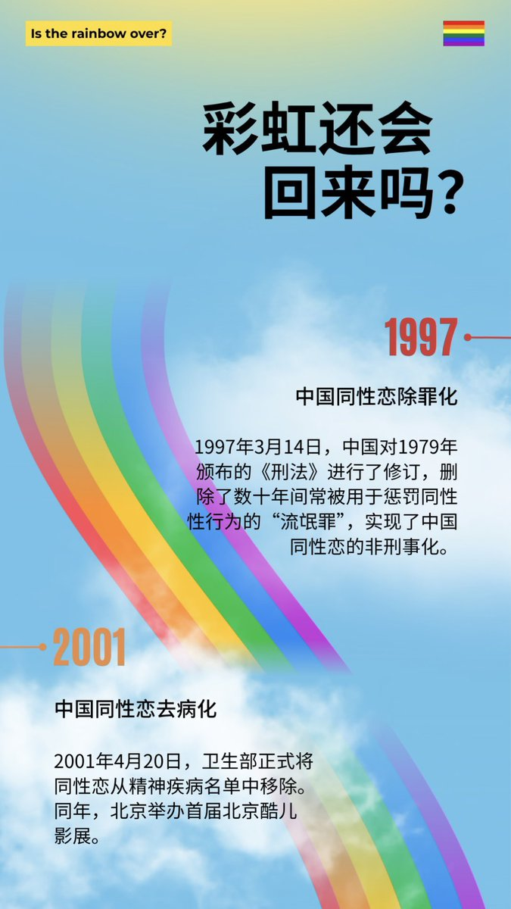
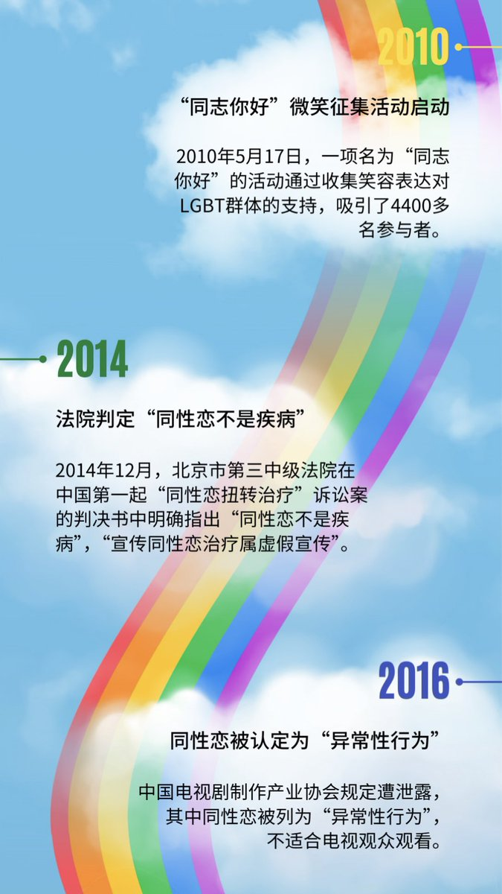
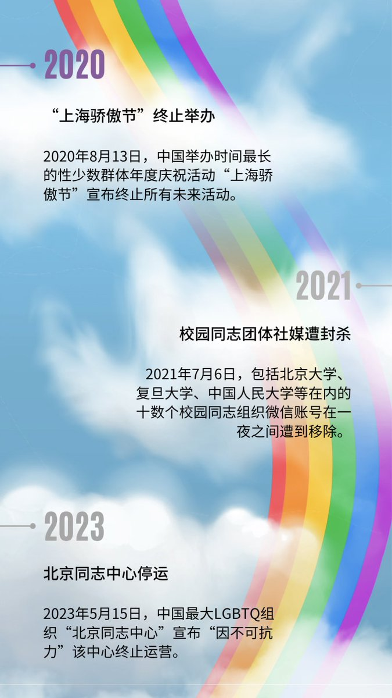

lovely水
@lovelyshuimao
@amber_digit2 @ValeriaEulabeia 牢英别装理中客了



𝑎𝑚𝑏𝑒𝑟
@amber_digit2
英国驻华大使馆制作的中国同性恋权益变迁史；有趣的是，虽然5.17是属于所有性少数的节日，这份长图中却只字未提跨性别权益。考虑到英国刚于今年三月禁止对跨性别儿童和青少年提供性别肯定医疗，不知道这是偶然的疏忽，还是两个反跨大国之间的惺惺相惜呢？ https://t.co/ZIVcrOukSo https://t.co/HEMRBzT3es